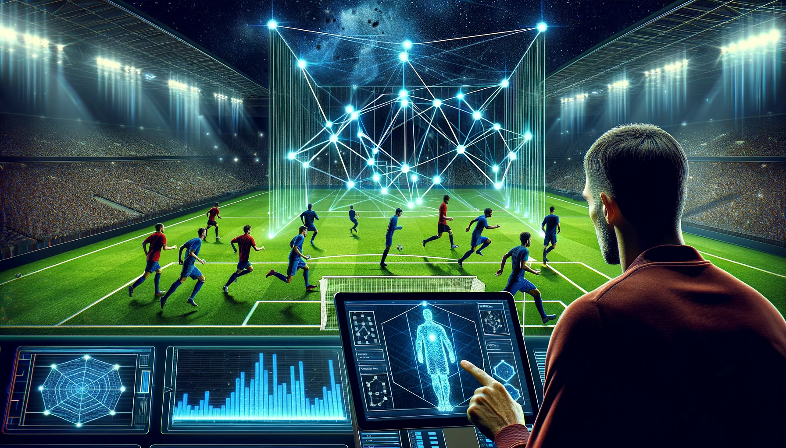

IA, Aplicaciones Web y su Influencia en el Mundo del Fútbol
La (IA) está revolucionando la forma en que interactuamos con la tecnología, y las aplicaciones web no son la excepción. Desde chatbots que ofrecen asistencia instantánea hasta sistemas de recomendación personalizados que mejoran la experiencia del usuario, la IA potencia las aplicaciones web haciéndolas más intuitivas, eficientes y adaptables. Algoritmos de aprendizaje automático analizan grandes volúmenes de datos para predecir comportamientos, optimizar procesos y ofrecer soluciones innovadoras en diversos sectores.
Este avance tecnológico también ha permeado esferas tan populares como el fútbol. Las aplicaciones web enriquecidas con IA permiten análisis tácticos avanzados, seguimiento del rendimiento de los jugadores en tiempo real y experiencias de visualización personalizadas para los aficionados. Además, la IA se utiliza para optimizar el scouting de talentos, prevenir lesiones mediante el análisis de datos biométricos e incluso para mejorar las estrategias de los equipos, demostrando cómo la sinergia entre la IA y las aplicaciones web está redefiniendo el deporte rey a nivel mundial.